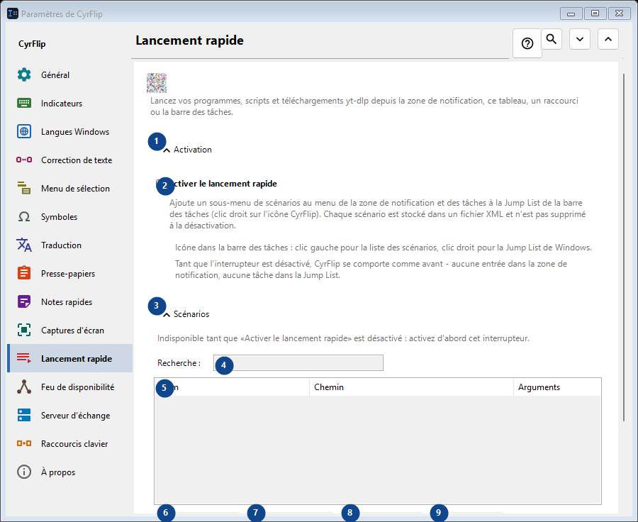
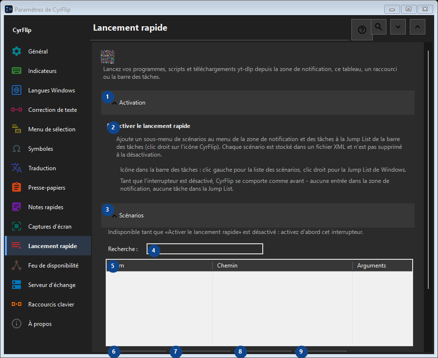

Lancement rapide
À quoi cela sert
Lancez vos programmes, scripts et téléchargements yt-dlp depuis la zone de notification, ce tableau, un raccourci ou la barre des tâches.


Ordre des actions
Les réglages s’appliquent immédiatement. Aucun ordre n’est imposé ; utilisez les groupes ci-dessous.
Éléments
1. Activation
Utilisez cette commande pour l’action indiquée. Lisez toute confirmation avant de l’accepter.
Vos raccourcis2. Activer le lancement rapide
Ajoute un sous-menu de scénarios au menu de la zone de notification et des tâches à la Jump List de la barre des tâches (clic droit sur l'icône CyrFlip). Chaque scénario est stocké dans un fichier XML et n'est pas supprimé à la désactivation.
Vos raccourcis3. Scénarios
Utilisez cette commande pour l’action indiquée. Lisez toute confirmation avant de l’accepter.
Vos raccourcis4. Recherche
Indisponible tant que «Activer le lancement rapide» est désactivé : activez d'abord cet interrupteur. Cet élément est indisponible. Activez d’abord sa fonction ou sélectionnez une entrée.
Vos raccourcis5. Lancement rapide
Indisponible tant que «Activer le lancement rapide» est désactivé : activez d'abord cet interrupteur. Cet élément est indisponible. Activez d’abord sa fonction ou sélectionnez une entrée. Nom / Chemin / Arguments / Dossier de travail / Admin / Raccourci
Vos raccourcis6. Ajouter...
Indisponible tant que «Activer le lancement rapide» est désactivé : activez d'abord cet interrupteur. Cet élément est indisponible. Activez d’abord sa fonction ou sélectionnez une entrée.
Vos raccourcis7. Modifier...
Indisponible tant que «Activer le lancement rapide» est désactivé : activez d'abord cet interrupteur. Cet élément est indisponible. Activez d’abord sa fonction ou sélectionnez une entrée.
Vos raccourcis8. Exécuter
Indisponible tant que «Activer le lancement rapide» est désactivé : activez d'abord cet interrupteur. Cet élément est indisponible. Activez d’abord sa fonction ou sélectionnez une entrée.
Vos raccourcis9. Cloner
Indisponible tant que «Activer le lancement rapide» est désactivé : activez d'abord cet interrupteur. Cet élément est indisponible. Activez d’abord sa fonction ou sélectionnez une entrée.
Vos raccourcis10. Supprimer
Indisponible tant que «Activer le lancement rapide» est désactivé : activez d'abord cet interrupteur. Cet élément est indisponible. Activez d’abord sa fonction ou sélectionnez une entrée.
Vos raccourcis11. Monter
Indisponible tant que «Activer le lancement rapide» est désactivé : activez d'abord cet interrupteur. Cet élément est indisponible. Activez d’abord sa fonction ou sélectionnez une entrée.
Vos raccourcis12. Descendre
Indisponible tant que «Activer le lancement rapide» est désactivé : activez d'abord cet interrupteur. Cet élément est indisponible. Activez d’abord sa fonction ou sélectionnez une entrée.
Vos raccourcis13. Exporter...
Indisponible tant que «Activer le lancement rapide» est désactivé : activez d'abord cet interrupteur. Cet élément est indisponible. Activez d’abord sa fonction ou sélectionnez une entrée.
Vos raccourcis14. Importer...
Indisponible tant que «Activer le lancement rapide» est désactivé : activez d'abord cet interrupteur. Cet élément est indisponible. Activez d’abord sa fonction ou sélectionnez une entrée.
Vos raccourcis15. Importer depuis OneClickRunner...
Indisponible tant que «Activer le lancement rapide» est désactivé : activez d'abord cet interrupteur. Cet élément est indisponible. Activez d’abord sa fonction ou sélectionnez une entrée.
Vos raccourcis